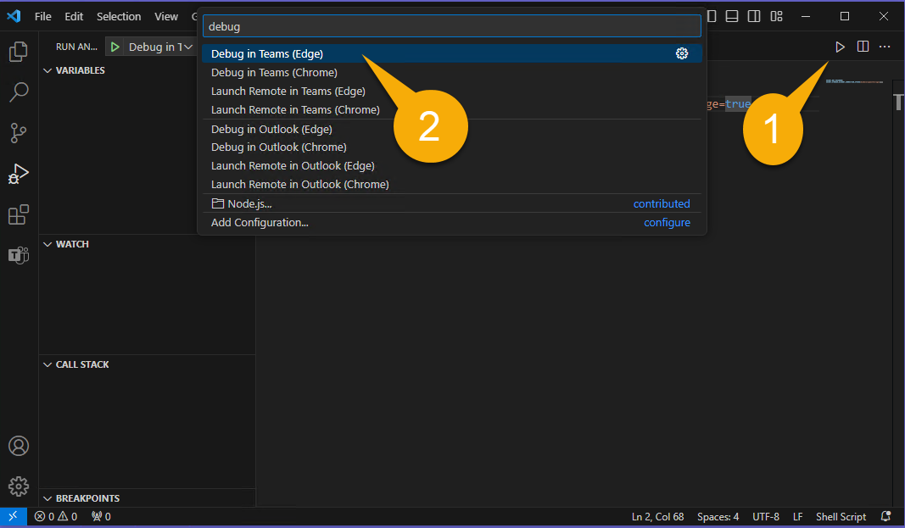
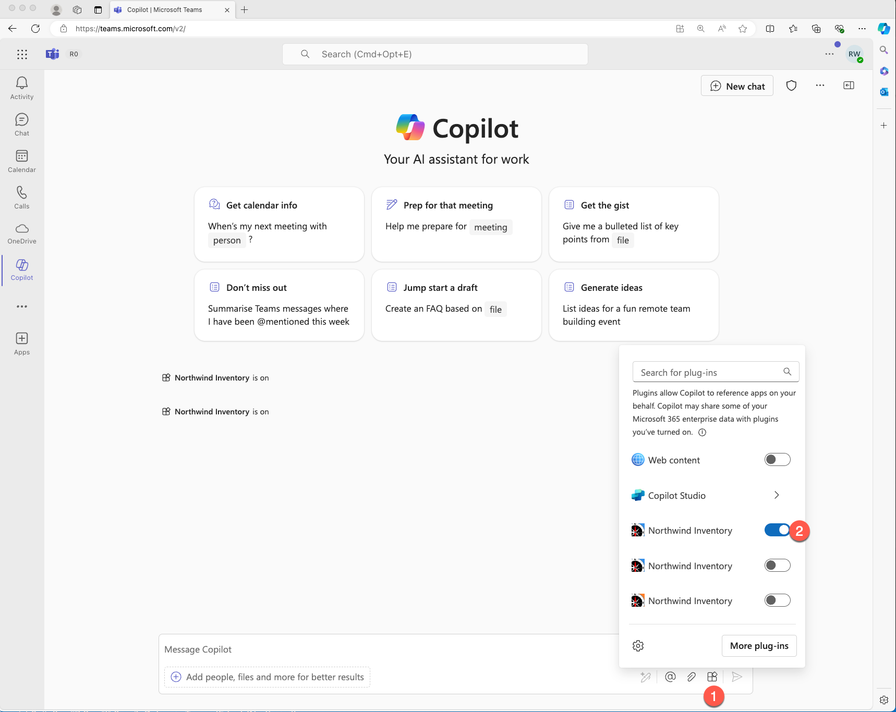
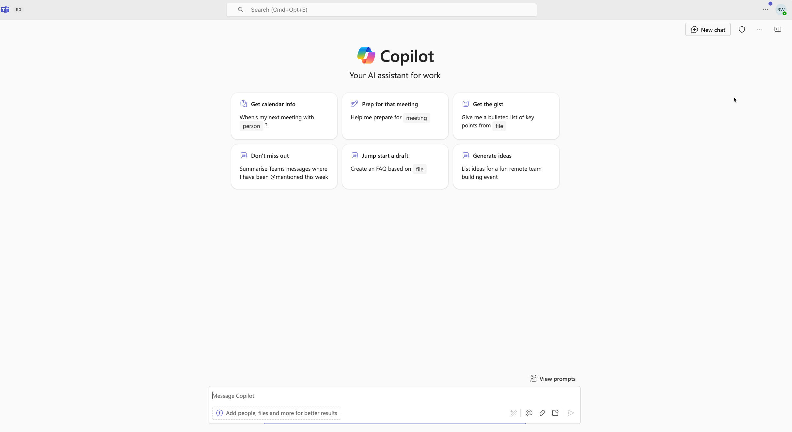
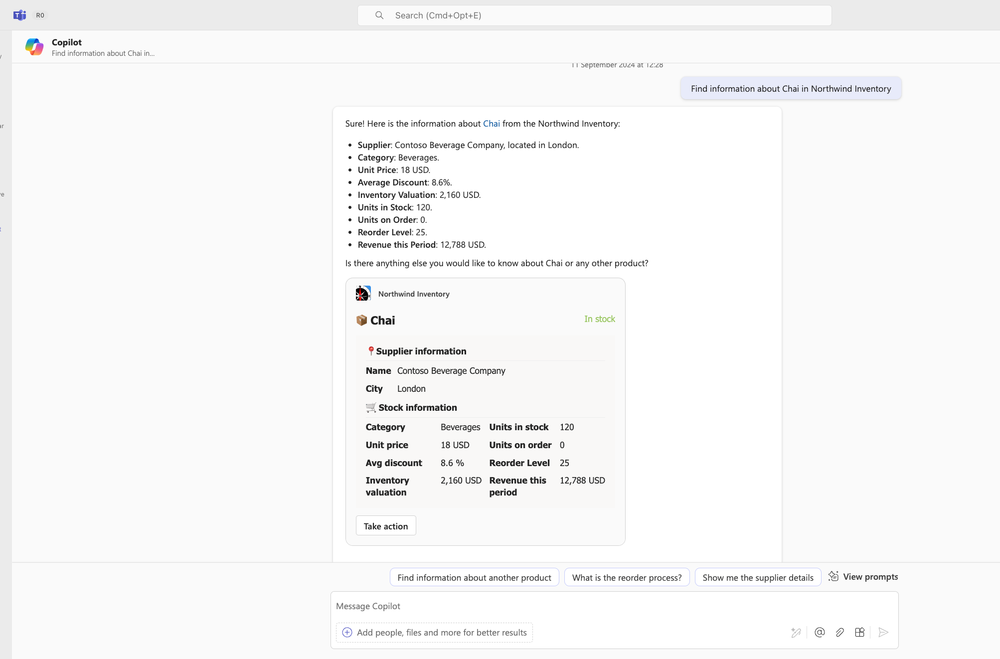
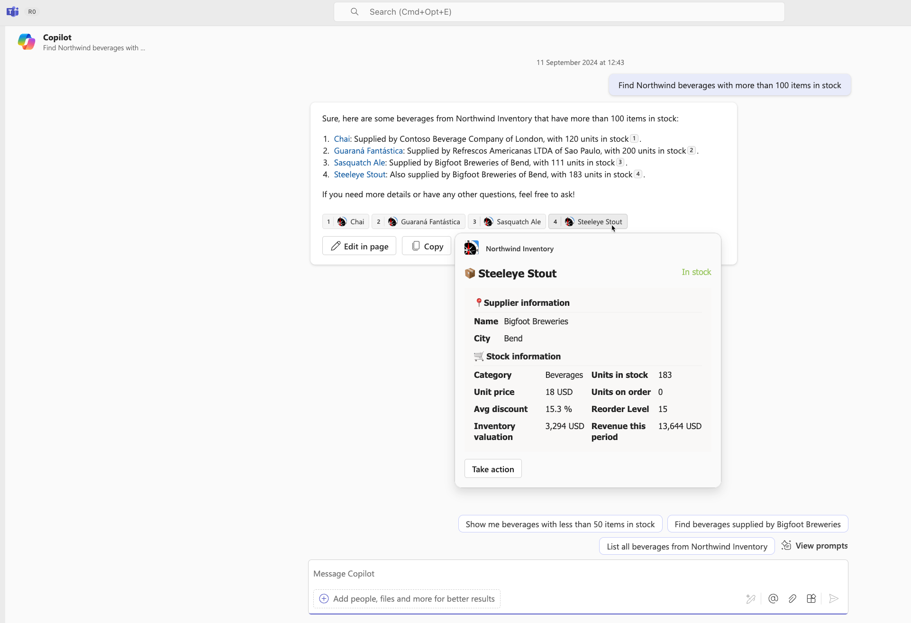
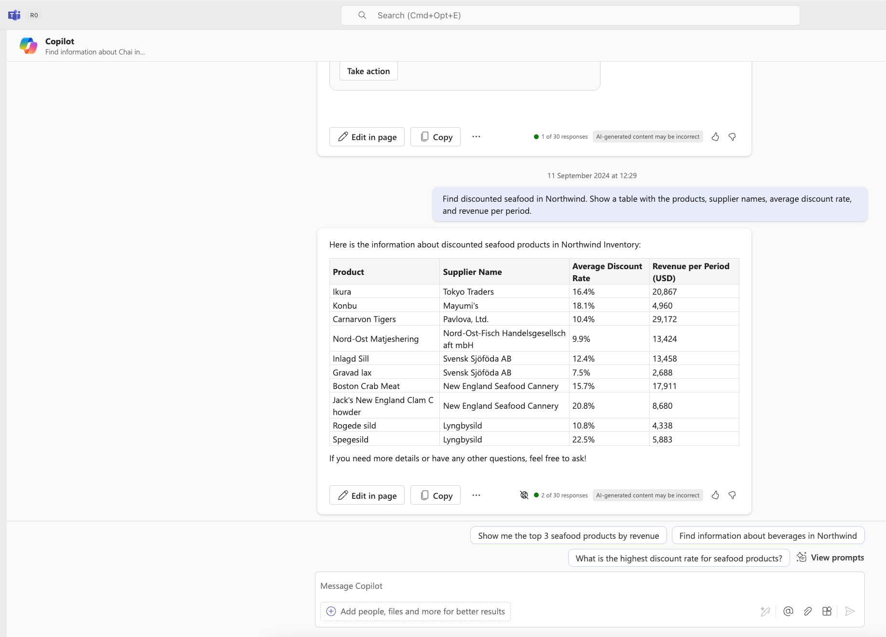
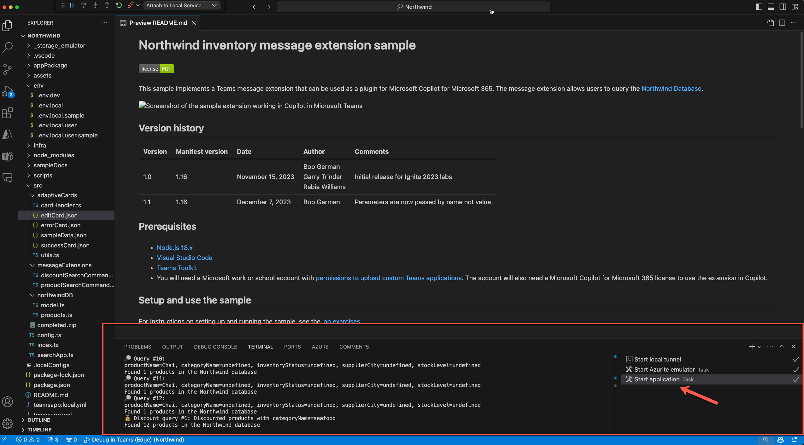
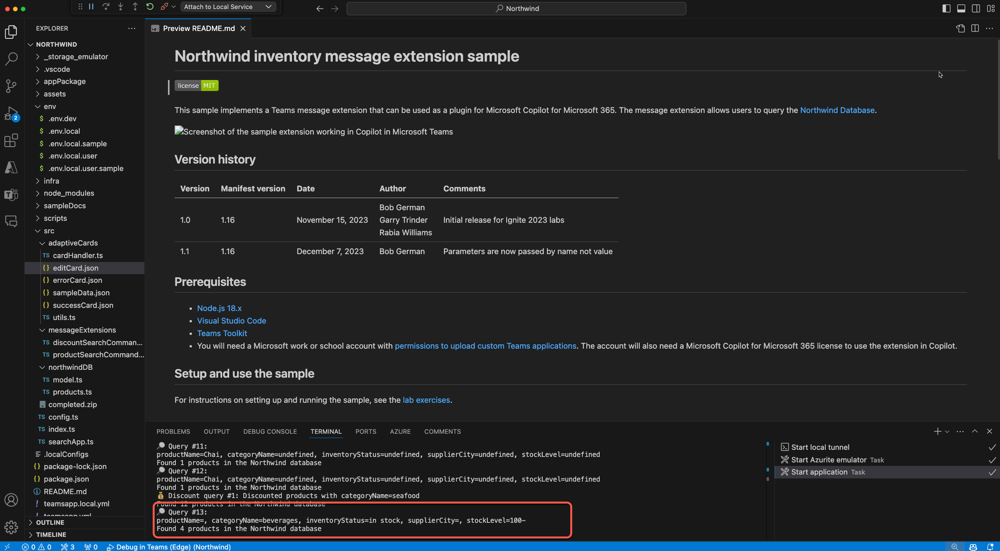
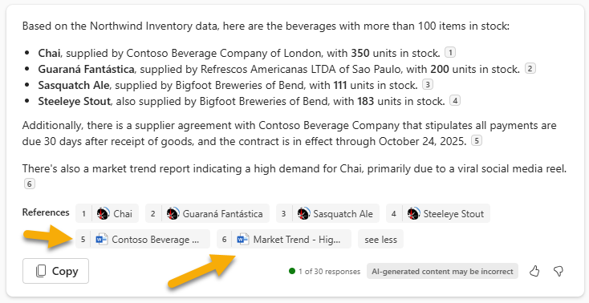

Lab M2 - Microsoft Microsoft 365 Copilot でアプリを実行する
このラボでは、Northwind アプリを Microsoft 365 Copilot のプラグインとして実行します。
Extend Teams Message Extension ラボのナビゲーション (Extend Path)
注意
すべてのコード変更を含む完成済みの演習内容は こちら からダウンロードできます。トラブルシューティングの際に役立ちます。
編集内容をリセットしたい場合は、リポジトリを再度クローンしてやり直してください。
このラボで行うこと:
- Microsoft Teams で実行したメッセージ拡張機能を Microsoft Copilot で実行します
- Northwind データベースを検索するために自然言語のプロンプトを使用する方法を学習します
演習 1 - サンプルを Copilot プラグインとして実行する
前のラボから続けている場合はデバッガーをそのまま実行し、Step 1 をスキップして Step 2 に進んでください。停止している場合は Step 1 から開始します。
Step 1 : アプリをローカルで実行する
F5 を押してデバッグを開始するか、スタート ボタン 1️⃣ をクリックして再起動します。デバッグ プロファイルの選択を求められるので、Debug in Teams (Edge) 2️⃣ を選択するか、他のプロファイルを選択します。

デバッグを開始すると Teams がブラウザー ウィンドウで開きます。Agents Toolkit にサインインしたものと同じ資格情報でログインしてください。
サインイン後、Microsoft Teams がアプリを開くダイアログを表示します。

アプリを開く場所を尋ねられます。既定では個人チャットです。チャネルまたはグループ チャットも選択できます。「Open」を選択します。

これでアプリとの個人チャットに入ります。
Step 2 - Microsoft 365 Copilot でテストする (単一パラメーター)
リマインダー
次の演習を行うには、Microsoft 365 Copilot の有効な ライセンス が必要です。
ブラウザーで Teams を開きます: https://teams.microsoft.com/v2/ 。開発者テナントでログインしてください。
Microsoft 365 Copilot を利用できる場合、Copilot アプリがチャットの上部に自動的にピン留めされます。Teams を開き、「チャット」を選択すると Copilot が表示されます。
Copilot アプリ体験に入ったら、チャット画面左下の作成ボックス下にあるプラグイン アイコン 1️⃣ を確認します。これをクリックして Northwind Inventory プラグインを有効化 2️⃣ します。

最良の結果を得るために、各プロンプトまたは関連プロンプトの前に「New chat」と入力するか、右上の New chat アイコンをクリックして新しいチャットを開始してください。

次に示すのは、メッセージ拡張機能の単一パラメーターのみを使用するプロンプト例です:
-
Find information about Chai in Northwind Inventory
-
Find discounted seafood in Northwind. Show a table with the products, supplier names, average discount rate, and revenue per period.
まずは Find information about Chai in Northwind Inventory を試してみましょう。

返されたアダプティブ カードを使用して製品に対してアクションを実行してください。1 件のみの場合、Copilot は上記のようにカード全体を表示します。複数の場合、Copilot は各項目の横に小さな数字を表示することがあります。数字にカーソルを合わせるとアダプティブ カードが表示されます。参照は回答の下部にも表示されます。
以下は複数項目が返され、参照が表示されている例です。

次に Find discounted seafood in Northwind. Show a table with the products, supplier names, average discount rate, and revenue per period. を試します。

テスト中はアプリケーションのログ メッセージを確認してください。 - Visual Studio Code に戻り、プロジェクトが実行中のターミナルを開きます。 - 「Start application」タスクが走っているターミナルを探します。
Copilot がプラグインを呼び出したタイミングを確認できます。前述のプロンプト後には次のようなログが表示されるはずです。

Step 3 - Microsoft 365 Copilot でテストする (複数パラメーター)
この演習では、サンプル プラグインのマルチパラメーター機能を試すプロンプトを使用します。これらのプロンプトでは、manifest で定義された名前、カテゴリ、在庫状況、サプライヤーの都市、在庫レベルによってデータが取得されます。
例として Find Northwind beverages with more than 100 items in stock と入力してみてください。Copilot が回答するためには、次の条件を満たす製品を特定する必要があります:
- カテゴリが beverages
- 在庫状況が in stock
- 在庫レベルが 100 より多い
プラグイン コードは 3 つすべてのフィルターを適用し、結果セットを返します。
VS Code のターミナルのログ メッセージを見ると、Copilot が要件を理解し、最初のメッセージ拡張コマンドで 3 つの パラメーター を設定していることが分かります。

このプロンプトを使用すると、Copilot は OneDrive のファイルも検索し、各サプライヤーの契約書から支払条件を見つける場合があります。この場合、参照の一部は Northwind Inventory アイコンではなく Word アイコンになります。
例を示します:

さらに試せるプロンプト:
-
Find Northwind dairy products that are low on stock. Show me a table with the product, supplier, units in stock and on order.
-
We’ve been receiving partial orders for Tofu. Find the supplier in Northwind and draft an email summarizing our inventory and reminding them they should stop sending partial orders per our MOQ policy.
-
Northwind will have a booth at Microsoft Community Days in London. Find products with local suppliers and write a LinkedIn post to promote the booth and products.
-
What beverage is high in demand due to social media that is low stock in Northwind in London. Reference the product details to update stock.
どのプロンプトが最も効果的か試してみてください。独自のプロンプトを作成し、Copilot がプラグインへアクセスする際のログ メッセージを観察しましょう。
おめでとうございます
Microsoft 365 Copilot でプラグインをテストすることができました。次のラボでは、新しい検索条件を追加するためのコードを記述します。「Next」を選択してください。